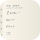

17:32


Caça ao erro

Foto 2 do seu caderno Cálculo · Capítulo 5Integrais definidas
Toque no passo onde o raciocínio quebra.
É esse o passo.
Faltou subtrair F(1). O teorema pede F(3) − F(1), ou seja 9 − 1 = 8. Foi exatamente o limite que ficou de fora no seu caderno.